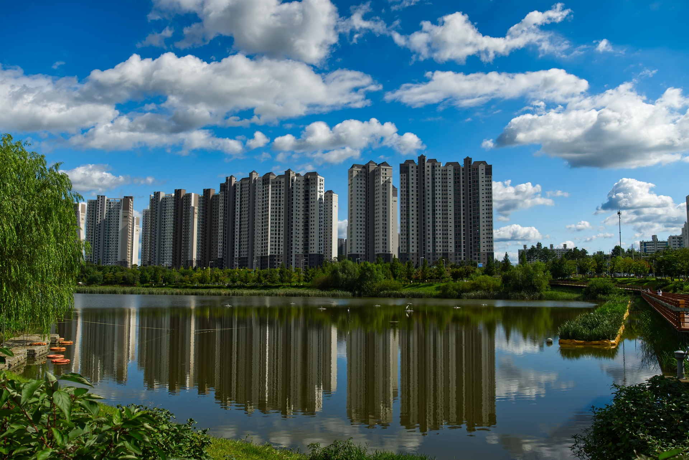

São Caetano do Sul é conhecida nacionalmente por seus altos índices de qualidade de vida, ocupando sempre posições de destaque em educação, saúde e renda. Apesar de ser o menor município do estado em extensão territorial, é um dos mais bem estruturados do país, com urbanização planejada e forte presença de áreas residenciais, comerciais e industriais.
A cidade se consolidou como um centro de oportunidades e inovação, combinando tradição com modernidade. Seus investimentos em infraestrutura, tecnologia e mobilidade garantem um ambiente acolhedor para moradores e visitantes. Além disso, São Caetano se destaca pela oferta de atividades culturais e esportivas, que movimentam a vida urbana e fortalecem o espírito comunitário.
Outro ponto marcante é a vocação para o lazer e o bem-estar. Parques, praças e centros de convivência estão distribuídos por toda a cidade, tornando-a convidativa para passeios em família e práticas esportivas. Essa integração entre desenvolvimento econômico, vida social e cuidado com os espaços públicos faz de São Caetano um município modelo no Brasil.
• Espaço Verde Chico Mendes – Um dos lugares mais procurados pelos moradores, com lagos, pistas de caminhada e eventos culturais.
• Parque Catarina Scarparo D’Agostini (Parque da Cidade) – Grande área verde com playgrounds, trilhas e espaços para esportes.
• Estádio Anacleto Campanella – Importante palco esportivo, casa do futebol municipal e sede de grandes jogos.
• Museu Histórico Municipal – Preserva documentos, fotos e peças que contam a trajetória da cidade.

Retorne a Página Anterior